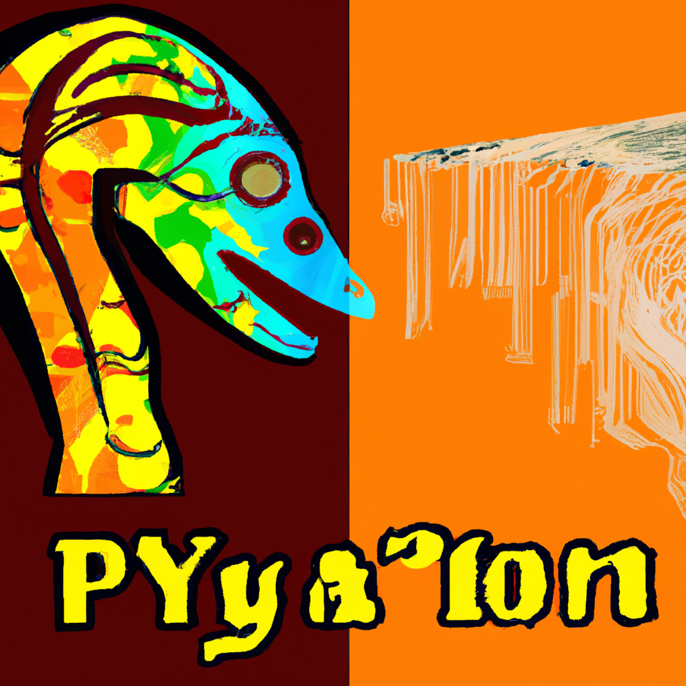

The future of Python and AI
As a mechanic, I may not be the most obvious person to talk about the future of Python and AI. However, as a tech enthusiast and Python user, I believe that the future of AI is closely intertwined with the future of Python.
Python has been the go-to language for AI and machine learning for several years now. Its simplicity and readability make it easy to learn and use, even for beginners. And as the demand for AI and machine learning continues to grow, Python's popularity is only going to increase.
One of the most exciting developments in the world of AI and Python is the rise of deep learning. Deep learning algorithms are revolutionizing the way we approach complex problems, from image recognition to natural language processing. And Python is at the forefront of this revolution, with libraries like TensorFlow and PyTorch leading the way.
But the future of Python and AI goes beyond just deep learning. As more organizations adopt AI and machine learning, there will be a growing need for tools and platforms that make it easy to develop and deploy AI models. Python's versatility and flexibility make it an ideal language for building these kinds of tools.
Of course, there are challenges ahead as well. One of the biggest challenges facing the Python and AI community is the need for more diverse and inclusive development teams. As AI becomes more ubiquitous, it's important that the people building these systems are representative of the populations they serve.
Overall, I'm excited about the future of Python and AI. As the demand for AI continues to grow, so too will the opportunities for Python developers to innovate and create new technologies. And with the right focus on inclusivity and diversity, we can ensure that the benefits of AI are shared by all.